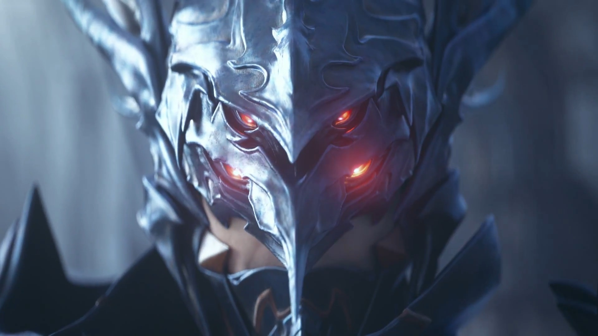

Ishgard needs you!
The Dragonsong War may be over but greater threats to our realm loom on the horizon. The Garlean Empire continues their invasion of Eorzea, The Ascians plot in the shadows, Beast tribes summon their Primals in a neverending cycle, and the remnants of Nidhogg's brood and their heretic allies wait for an opportunity to avenge their father.
